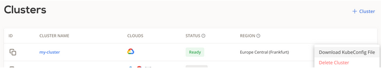
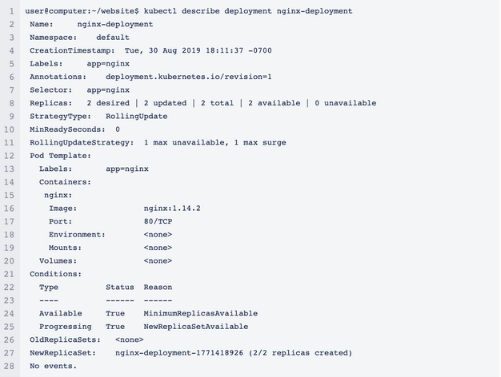
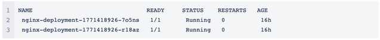

Deploying Applications¶
A CAST AI managed Kubernetes cluster is no different than vanilla Kubernetes - it just runs on multi-cloud. Having this in mind, you can deploy an application just like you would in any Kubernetes cluster - by using kubectl.
After creating your cluster in the CAST AI console and making sure that it’s in the ready state, you can download the cluster’s kubeconfig:

For detailed instructions on how to use a downloaded kubeconfig file, check the official Kubernetes documentation.
The quickest way is simply by setting a downloaded file as KUBECONFIG env variable in your shell. For example:
export KUBECONFIG=~/Downloads/my-cluster_config
Once you do this, you will have access to my-cluster in your used shell. From now on, you can deploy any application using kubectl. Here’s a tutorial from Kubernetes official documentation.
If you’re tired of reading documentation and just want to get started, run the following:
kubectl apply -f https://k8s.io/examples/application/deployment.yaml
The command will use the following deployment YAML file from k8s, for example:
apiVersion: apps/v1
kind: Deployment
metadata:
name: nginx-deployment
spec:
selector:
matchLabels:
app: nginx
replicas: 2 # tells deployment to run 2 pods matching the template
template:
metadata:
labels:
app: nginx
spec:
containers:
- name: nginx
image: nginx:1.14.2
ports:
- containerPort: 80
For displaying information about the Deployment run:
kubectl describe deployment nginx-deployment
The output is similar to this:

List the pods created by the deployment:
kubectl get pods -l app=nginx
The output is similar to this:

Display information about a Pod:
kubectl describe pod <pod-name>
where <pod-name> is the name of one of your Pods.